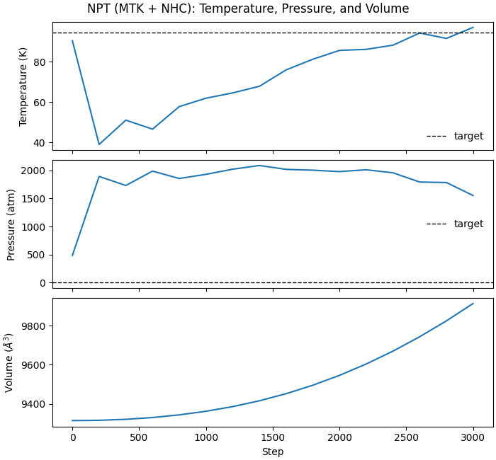

Note
Go to the end to download the full example code.
NPT Dynamics (MTK + Nosé-Hoover Chain) with Lennard-Jones Potential#
This example demonstrates isothermal-isobaric (NPT) dynamics using the Martyna-Tobias-Klein (MTK) barostat coupled with a Nosé-Hoover chain (NHC) thermostat, driven by the Lennard-Jones (LJ) potential.
from __future__ import annotations
import matplotlib.pyplot as plt
import numpy as np
import warp as wp
from _dynamics_utils import (
DEFAULT_CUTOFF,
DEFAULT_SKIN,
EPSILON_AR,
SIGMA_AR,
MDSystem,
create_fcc_argon,
pressure_atm_to_ev_per_a3,
run_npt_mtk,
)
print("=" * 95)
print("NPT (MTK + NHC) DYNAMICS WITH LENNARD-JONES POTENTIAL")
print("=" * 95)
print()
device = "cuda:0" if wp.is_cuda_available() else "cpu"
print(f"Using device: {device}")
print("\n--- Creating FCC Argon System ---")
positions, cell = create_fcc_argon(num_unit_cells=4, a=5.26) # 256 atoms
print(f"Created {len(positions)} atoms in {cell[0, 0]:.2f} ų box")
print("\n--- Initializing MD System ---")
system = MDSystem(
positions=positions,
cell=cell,
epsilon=EPSILON_AR,
sigma=SIGMA_AR,
cutoff=DEFAULT_CUTOFF,
skin=DEFAULT_SKIN,
switch_width=0.0,
device=device,
dtype=np.float64,
)
print("\n--- Setting Initial Temperature ---")
system.initialize_temperature(temperature=94.4, seed=42)
===============================================================================================
NPT (MTK + NHC) DYNAMICS WITH LENNARD-JONES POTENTIAL
===============================================================================================
Using device: cuda:0
--- Creating FCC Argon System ---
Created 256 atoms in 21.04 ų box
--- Initializing MD System ---
Initialized MD system with 256 atoms
Cell: 21.04 x 21.04 x 21.04 Å
Cutoff: 8.50 Å (+ 0.50 Å skin)
LJ: ε = 0.0104 eV, σ = 3.40 Å
Device: cuda:0, dtype: <class 'numpy.float64'>
Units: x [Å], t [fs], E [eV], m [eV·fs²/Ų] (from amu), v [Å/fs]
--- Setting Initial Temperature ---
Initialized velocities: target=94.4 K, actual=90.4 K
print("\n--- NPT Run (3000 steps) ---")
print(f"Pressure units sanity: 1 atm = {pressure_atm_to_ev_per_a3(1.0):.6e} eV/ų")
stats = run_npt_mtk(
system=system,
num_steps=3000,
dt_fs=1.0,
target_temperature_K=94.4,
target_pressure_atm=1.0,
tdamp_fs=500.0,
pdamp_fs=5000.0,
chain_length=3,
log_interval=200,
)
--- NPT Run (3000 steps) ---
Pressure units sanity: 1 atm = 6.324209e-07 eV/ų
Running 3000 NPT (MTK) steps at T=94.4 K, P=1.000 atm
dt = 1.000 fs, tdamp = 500.0 fs, pdamp = 5000.0 fs, chain_length = 3
========================================================================================================================
Step KE (eV) PE (eV) Total (eV) T (K) P (atm) V (Å^3) Neighbors min r (Å) max|F|
========================================================================================================================
0 2.9787 -21.5621 -18.5833 90.37 483.900 9314.02 9984 3.713 2.313e-03
200 1.2863 -19.7063 -18.4200 39.03 1893.024 9315.31 10305 3.322 1.434e-01
400 1.6832 -19.9225 -18.2394 51.07 1731.236 9320.49 10255 3.299 1.882e-01
600 1.5364 -19.5727 -18.0362 46.61 1988.235 9329.58 10281 3.325 1.770e-01
800 1.9050 -19.7113 -17.8064 57.79 1856.569 9343.18 10253 3.221 2.158e-01
1000 2.0416 -19.5881 -17.5465 61.94 1930.528 9361.65 10266 3.263 1.812e-01
1200 2.1285 -19.3882 -17.2597 64.58 2022.277 9385.49 10255 3.271 2.253e-01
1400 2.2366 -19.2072 -16.9706 67.86 2088.180 9415.30 10239 3.160 3.128e-01
1600 2.5043 -19.1923 -16.6880 75.98 2019.078 9451.71 10208 3.235 2.217e-01
1800 2.6786 -19.0667 -16.3880 81.27 2004.504 9495.07 10189 3.173 2.851e-01
2000 2.8230 -18.9525 -16.1294 85.65 1979.736 9545.66 10196 3.244 1.990e-01
2200 2.8401 -18.6969 -15.8569 86.16 2011.827 9603.85 10170 3.202 2.327e-01
2400 2.9082 -18.5354 -15.6272 88.23 1957.847 9669.64 10089 3.220 2.466e-01
2600 3.1070 -18.5029 -15.3959 94.26 1793.094 9743.27 10039 3.222 2.586e-01
2800 3.0187 -18.2322 -15.2135 91.58 1784.432 9824.60 9971 3.228 2.430e-01
2999 3.1978 -18.2391 -15.0413 97.02 1553.600 9913.12 9969 3.185 2.613e-01
print("\n--- Analysis ---")
temps = np.array([s.temperature for s in stats])
pressures_atm = np.array([s.pressure for s in stats])
volumes = np.array([s.volume for s in stats])
steps = np.array([s.step for s in stats])
print(f" Mean Temperature: {temps.mean():.2f} ± {temps.std():.2f} K")
print(" Target Temperature: 94.4 K")
print()
print(f" Mean Pressure: {pressures_atm.mean():.3f} ± {pressures_atm.std():.3f} atm")
print(" Target Pressure: 1.0 atm")
print()
print(f" Mean Volume: {volumes.mean():.2f} ± {volumes.std():.2f} ų")
fig, ax = plt.subplots(3, 1, figsize=(7.0, 6.5), sharex=True, constrained_layout=True)
ax[0].plot(steps, temps, lw=1.5)
ax[0].axhline(94.4, color="k", ls="--", lw=1.0, label="target")
ax[0].set_ylabel("Temperature (K)")
ax[0].legend(frameon=False, loc="best")
ax[1].plot(steps, pressures_atm, lw=1.5)
ax[1].axhline(1.0, color="k", ls="--", lw=1.0, label="target")
ax[1].set_ylabel("Pressure (atm)")
ax[1].legend(frameon=False, loc="best")
ax[2].plot(steps, volumes, lw=1.5)
ax[2].set_xlabel("Step")
ax[2].set_ylabel(r"Volume ($\AA^3$)")
fig.suptitle("NPT (MTK + NHC): Temperature, Pressure, and Volume")
print("\n" + "=" * 95)
print("SIMULATION COMPLETE")
print("=" * 95)

--- Analysis ---
Mean Temperature: 73.71 ± 17.84 K
Target Temperature: 94.4 K
Mean Pressure: 1818.629 ± 369.204 atm
Target Pressure: 1.0 atm
Mean Volume: 9502.00 ± 189.27 ų
===============================================================================================
SIMULATION COMPLETE
===============================================================================================
Total running time of the script: (0 minutes 16.107 seconds)